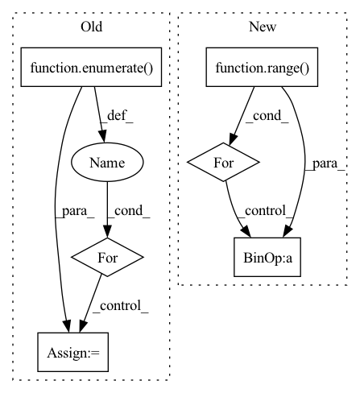

Pattern ID :3219
Before Change
return self.bottleneck(torch.cat(psp_outs, dim=1))
def forward(self, inputs: Tuple[Tensor, Tensor, Tensor, Tensor]) -> Tensor:
laterals = [lateral_conv(inputs[i]) for i, lateral_conv in enumerate( self.lateral_convs) ]
laterals.append(self.psp_forward(inputs))
used_backbone_levels = len(laterals)
for i in range(used_backbone_levels-1, 0, -1):
laterals[i-1] += F.interpolate(laterals[i], size=laterals[i-1].shape[2:], mode="bilinear", align_corners=False)
fpn_outs = [self.fpn_convs[i](laterals[i]) for i in range(used_backbone_levels-1)]
fpn_outs.append(laterals[-1])After Change
f = self.ppm(features[-1])
fpn_features = [f]
for i in reversed(range( len(features)-1) ):
feature = self.fpn_in[i](features[i])
f = feature + F.interpolate(f, size=feature.shape[-2:], mode="bilinear", align_corners=False)
fpn_features.append(self.fpn_out[i](f))
fpn_features.reverse()In pattern: SUPERPATTERN
Frequency: 3
Non-data size: 6
Instances Fragment ID: 10259823
Project Name: sithu31296/semantic-segmentation
Commit Name: af9bcfd5c4642c42b0fa9e1b2af46eb45ec9063d
Time: 2021-08-27
Author: sithu31296@gmail.com
File Name: models/heads/upernet.py
M Class Name: UPerHead
N Class Name: UPerHead
M Method Name: forward(2)
N Method Name: forward(2)
M Parent Class: nn.Module
N Parent Class: nn.Module
M File Name: models/heads/upernet.py
N File Name: models/heads/upernet.py
M Start Line: 53
M End Line: 63
N Start Line: 44
N End Line: 53
Before Change
def forward(self, x: List[torch.Tensor]) -> List[torch.Tensor]:
// top-down
inters = [x[-1]] // P7in
for i, conv in enumerate( self.inter_convs) :
out = F.interpolate(inters[-1], scale_factor=2., mode="nearest") // resize(P7td)
out = self.fuse([x[-2-i], out]) // P6in + resize(P7td)
inters.append(conv(out)) // P6td = conv(P6in + resize(P7td))
// bottom-upAfter Change
// bottom-up
outs = [None] * self.num_levels
outs[0] = tds[0]
for i in range( self.num_levels - 2):
outs[i+1] = self.out_fuses[i]([x[i+1], tds[i+ 1], self.downsample(tds[i])]) // P4in + P4td + resize(P3td)
outs[-1] = self.out_fuses[-1]([x[-1], self.downsample(tds[-2])]) // P7in + resize(P6td)
return outs Fragment ID: 10259816
Project Name: gau-nernst/vision-toolbox
Commit Name: 0844b6bcb142e63b09cf6ae44e5087c20d52c380
Time: 2022-04-10
Author: gau.nernst@yahoo.com.sg
File Name: vision_toolbox/necks.py
M Class Name: BiFPNLayer
N Class Name: BiFPNLayer
M Method Name: forward(2)
N Method Name: forward(2)
M Parent Class: nn.Module
N Parent Class: nn.Module
M File Name: vision_toolbox/necks.py
N File Name: vision_toolbox/necks.py
M Start Line: 163
M End Line: 180
N Start Line: 160
N End Line: 172
Before Change
count = np.arange(x.shape[0]) + 1
self.c_t = torch.zeros_like(self.emb) // shape=(seq_len, batch_size, day_dim)
for i, att_timesteps in enumerate( count) :
// 按时间步迭代，计算每个时间步的经attention的gru输出
self.c_t[i] = self.attentionStep(first_h_a, first_h_b, att_timesteps)
if self.drop < 1.0:
self.c_t = self.dropout(self.c_t)After Change
out = torch.zeros((batch_size, time_steps, self.hidden_dim))
for cur_time in range( time_steps):
cur_x = x[:, : cur_time + 1, :]
out[:, cur_time, :] = self.retain_encoder(cur_x)
return out
Fragment ID: 10259827
Project Name: yhzhu99/covid-ehr-benchmarks
Commit Name: b3d4ba85ad8e8cfeb3e45e07e5fadfa3fd4a25fa
Time: 2022-06-25
Author: yhzhu99@gmail.com
File Name: app/models/backbones/retain.py
M Class Name: RETAIN
N Class Name: RETAIN
M Method Name: forward(2)
N Method Name: forward(2)
M Parent Class: nn.Module
N Parent Class: nn.Module
M File Name: app/models/backbones/retain.py
N File Name: app/models/backbones/retain.py
M Start Line: 64
M End Line: 83
N Start Line: 44
N End Line: 53